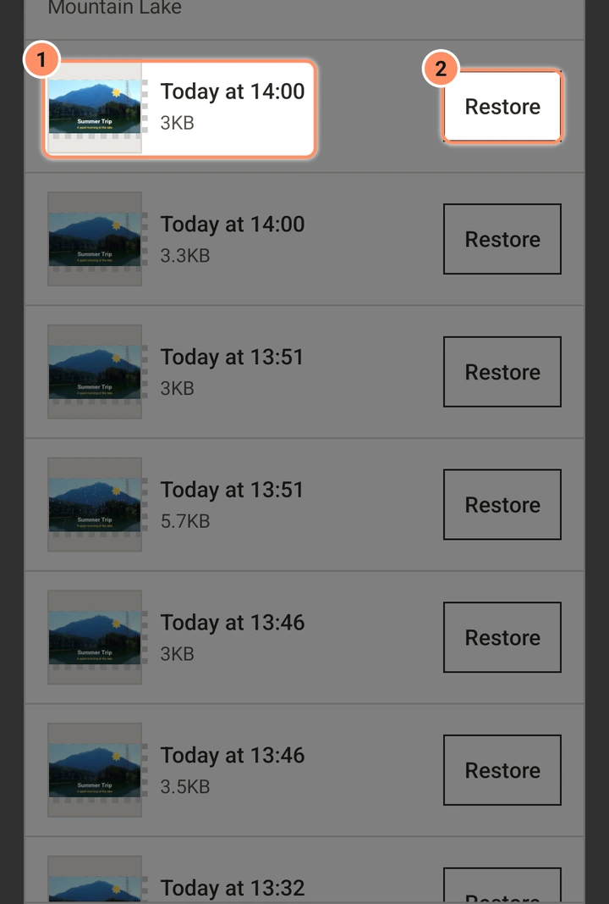
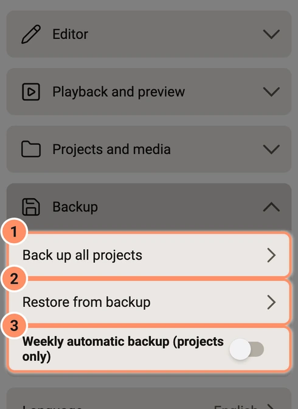

Mga Proyekto, backup at import
Paano naka-save ang mga proyekto, mga bersyon at pagbawi mula sa crash, mga backup, nawawalang media, pag-import ng mga project file at kung saan nakalagay ang mga file.
Sa pahinang ito
Pag-save
Walang Save button. Pagkatapos ng bawat pagbabago, isinusulat ng editor ang proyekto sa telepono pagkaraan ng ilang sandali, sa paraang hindi kayang mag-iwan ng kalahating naisulat na file. Habang nasa gitna ka ng pag-drag, may draft ding isinusulat. Kung mabibigo ang pag-save dahil puno ang telepono, sasabihin ng app na "Hindi ma-save ang proyekto. Magbakante ng storage." at muling susubukan.
Kasaysayan ng bersyon
Itinatabi ng app ang mga naunang bersyon ng bawat proyekto. Naka-save ang isang bersyon kapag binuksan mo ang proyekto, kapag isinara mo ito, at pagkatapos ng pag-save kung ang pinakabagong bersyon ay hindi bababa sa dalawang minuto ang tanda. Nagtatabi rin ito ng isa bago ang isang restore at bago mo sagutin ang isang tanong sa crash-recovery. Itinatabi ng app ang 20 pinakabagong bersyon at ang pinakabago sa bawat isa sa huling pitong araw, at binubura ang mga mas luma.
Buksan ito mula sa menu ng project card (Kasaysayan ng bersyon) o sa mga setting ng proyekto sa editor (Mga nakaraang bersyon). May thumbnail, oras ("Ngayon nang 14:05", "Kahapon nang 09:30") at I-restore ang bawat row. Bago mag-restore, may tanong muna: "Babalik ang proyekto sa kalagayan nito ... Itatago ang kasalukuyang estado sa Version history, kaya walang mawawala."

Pagbawi mula sa crash
Kung biglang huminto ang app habang bukas ang isang proyekto, sa susunod na pag-start ay ipapakita ang Biglang nagsara ang AbsentMotion kasama ang dahilan sa isang pangungusap, tulad ng "Naubusan ito ng memory habang nag-i-export." Kung may mga hindi na-save na pagbabago, magtatanong ito ng "Ibalik ang huling mga edit mo sa ...?" kasama ang I-restore at Itapon. Ang itinapong draft ay nananatili sa kasaysayan ng bersyon ng proyekto.
Isinusulat din ang bawat crash sa Mga crash log sa Mga Setting: oras, dahilan sa isang pangungusap, bersyon ng app at Android, modelo ng telepono, ginagawa mo noon, at ang teknikal na detalye. Itinatabi ang huling 20. Walang ipinapadala kahit saan; makokopya mo ang isa para ikaw mismo ang magpadala.
Sirang proyekto
Kung hindi mabasa ang isang project file, sasabihin ng card nito na May sira — mag-restore ng bersyon. I-tap ito para mag-restore ng naunang bersyon, o burahin ito.
Mga media file
Ang mga larawan, bidyo at audio na idinadagdag mo ay, bilang default, kinokopya sa proyekto, para hindi umasa ang proyekto sa iyong gallery. I-off ito gamit ang Magtabi ng kopya ng na-import na media sa proyekto sa Mga setting kung gusto mong makatipid sa storage.
- Kinokopya ng Ipunin ang media sa proyekto (menu ng project card) papunta sa proyekto ang bawat file na binabasa pa ng proyekto mula sa labas ng sarili nitong folder. Sinusubukan muna nitong hanapin ang mga file na nawala.
- Nawawalang media. Kapag wala na sa telepono ang isang file, hinahanap ito ng app sa iyong photo, video at audio library ayon sa eksaktong pangalan at laki kapag binuksan ang proyekto, at ginagamit ito kung eksaktong isang file ang tumutugma. Para ayusin ito nang manu-mano, piliin ang layer, buksan ang Impormasyon ng media sa menu ng layer at piliin ang Palitan ang media file. Kung mag-e-export ka na may nawawalang file, magbababala ang app at hindi nito isasama ang mga layer na iyon.
Backup at restore
Sa Mga Setting, grupong Backup:
- Ang I-backup ang lahat ng proyekto ay gumagawa ng isang file,
AbsentMotion-backup-na sinusundan ng petsa at oras, na nagtatapos sa.absbackup, sa Documents/AbsentMotion. Naglalaman ito ng lahat ng proyekto kasama ang kanilang kasaysayan ng bersyon, mga template kasama ang kanilang media, mga preset, iyong mga color palette, mga na-import na font, mga resulta ng AI at lahat ng itinabing media. Kailangan nito ng libreng espasyo na halos kasinlaki ng content dagdag ang 50 MB. Nananatili ang file sa telepono kahit i-uninstall mo ang AbsentMotion; kopyahin ito sa computer o cloud service para mapanatiling ligtas. - Ang Lingguhang awtomatikong backup (mga proyekto lang) ay naka-off bilang default. Kapag naka-on, ilang segundo pagkatapos magbukas ng app, kung lumipas na ang pitong araw mula sa huling backup, isusulat nito ang
AbsentMotion-weekly-...absbackupkasama lamang ang mga proyekto (walang media) at buburahin ang naunang lingguhang file. Ang mga manual na backup ay hindi kailanman binubura ng app. - Hihilingin sa iyo ng I-restore mula sa backup na pumili ng backup file. Ang proyektong narito na at pareho ay hindi gagalawin; ang proyektong pareho ang pangalan pero iba ang nilalaman ay ire-restore bilang hiwalay na kopya. Walang umiiral na maa-overwrite. Ang restore ay maaaring ihinto at patakbuhin muli mamaya.

Pag-import ng mga project file
Mabubuksan mo ang isang project file mula sa ibang app (halimbawa isang file manager) gamit ang Share o Open with. Para sa import button sa home screen, i-on ang Ipakita ang import card sa listahan ng proyekto: lalabas ang card na Pumili ng file sa itaas ng iyong mga proyekto.
| File | Ano ang makukuha mo |
|---|---|
.absproj na ginawa ng AbsentMotion | Isang normal na proyekto kasama ang media nito |
Isang project package mula sa ibang editor (.amproj) | Nagiging template ang bawat scene, at ang anumang asset ay nananatiling asset |
| Isang plain scene XML file | Isang normal na proyekto. Hindi sinusundan ang mga media link para sa kaligtasan, kaya lalabas ang media bilang nawawala maliban kung mahahanap ito sa gallery. |
Isang Adobe Animate file (.fla) | Isang normal na proyekto: tingnan ang Mga Adobe Animate file |
Ang mga epektong mayroon ang AbsentMotion ay kino-convert. Ang mga epektong wala ito ay nananatili sa file pero hindi iginuguhit. Ipinapakita ng isang Bundle ng komunidad ang thumbnail, pamagat, gumawa, paglalarawan at mga tag nito kapag ini-import. Pagkatapos ng import, ang ulat ay naglilista lamang ng mga hindi nakarating: mga epektong hindi nito kayang patakbuhin, mga setting na hindi naipasa, media na hindi natagpuan at mga font na hindi naka-install. Kapag nakarating ang lahat, walang ipinapakitang ulat. Ang mga backup file (.absbackup) ay nire-restore mula sa Mga setting, hindi ini-import dito.
May mga limitasyon para protektahan ang telepono. Halimbawa, ang isang package ay maaaring may hindi hihigit sa 2000 file at 32 proyekto, hindi hihigit sa 2 GB kapag na-unpack, at kailangang may sukat ang isang scene na hindi hihigit sa 16384 pixels at frame rate mula 1 hanggang 240. Sasabihin ng app kung aling patakaran ang nilabag ng isang file.
Mga proyekto mula sa ibang editor
Sa mga Scene XML file at .amproj package mula sa ibang editor, ang mga larawang may malawak na kulay (Display P3) ay mukhang kapareho ng sa editor na iyon.
Bawat bersyon ng AbsentMotion ay medyo mas gumagaling sa pag-convert ng mga proyektong ito, at pinapanatili ng isang proyekto ang conversion ng bersyon na nag-import nito. Sa unang pagbukas mo ng proyektong na-import ng mas lumang bersyon, may mensaheng nagmumungkahing i-import ulit ito para sa pinakabagong itsura. I-import ulit ang file mula sa ibang editor para makuha ang kasalukuyang conversion.
Mga Adobe Animate file
Nag-i-import ang AbsentMotion ng mga .fla file na na-save ng Adobe Animate o Flash CS5 at mas bago. Buksan ang isa tulad ng ibang project file: gamit ang Pumili ng file, Share o Open with. Sa computer, gamitin ang File, Mag-import ng Proyekto… o i-drop ang file sa window; doon, gumagana rin ang .xfl file, basta nasa tabi nito ang natitirang bahagi ng folder nito. Sa telepono, i-pack ang XFL folder sa isang ZIP file at i-import iyon.
Nagiging isang proyekto ang file na may stage size, frame rate at background color ng Animate file, at sunod-sunod na pinapatugtog ang mga scene nito.
- Naisasama: mga hugis na may solid, two-color gradient at picture fill, at ang mga linya nila; mga symbol, bawat isa bilang grupo na may sariling timeline; mga larawan; mga classic tween bilang keyframe, kasama ang mga easing nila; alpha, tint at brightness; mga mask layer; at mga MP3 na tunog sa main timeline.
- Hindi naisasama: mga text field, ActionScript, mga filter, mga blending mode, ibang color effect, mga motion guide path, mga camera layer, mga component at compiled clip, mga bidyo, mga bone (IK) pose at mga library symbol na wala sa stage. Ipinapakita ng shape tween ang panimulang hugis nito at ng motion tween ang unang keyframe nito. Dalawang kulay ang pinapanatili ng mga gradient na may higit sa dalawang kulay, iginuguhit nang tuloy-tuloy ang mga putol-putol at iba pang espesyal na linya, at nagiging tuwid na galaw ang mga easing na hindi mabasa.
Ang bawat symbol o larawang gumagalaw ay nagiging isang layer na may mga keyframe, kahit pa marami sa kanila ang nasa iisang Animate layer. Pinapanatili ng graphic symbol ang bawat frame ng sarili nitong timeline, kaya patuloy na gumagana ang mga rig na may bibig, mata o kamay: ang frame na ipinapakita ng Animate (single frame, play once, loop o isa sa mga reverse mode) ay nilalagyan ng keyframe sa Frame ng grupo nito, na puwede mong baguhin mamaya (tingnan ang Mga tool ng layer). Nilo-loop ng movie clip ang sarili nitong timeline, at ipinapakita ng button ang unang frame nito.
Pagkatapos ng import, inililista ng ulat ang pareho, may bilang ang bawat isa: Na-import mula sa Animate file at Hindi na-import (ipinapakita nang wala ito).
Iba ang format ng mga lumang .fla file mula sa Flash CS4 at mas luma. Sasabihin ng app: "Na-save ang .fla file na ito sa Flash CS4 o mas luma. Ang mga .fla file lang mula sa Flash CS5 at mas bago ang puwedeng i-import."
Mga file format at kung saan nakalagay ang mga bagay
- Ang isang proyekto ay isang XML text file. Nakalagay ang media sa tabi nito sa private folder ng proyekto.
- Ang isang
.absprojay ZIP:project.xml, isangmanifest.jsonat ang mga media file sa ilalim ngmedia/. Nasa isang folder ang mga file ng bawat 3D model. Nasamanifest.jsondin ang mga detalye ng isang bundle ng komunidad, at nasacommunity/ang thumbnail nito. - Ang isang
.absbackupay ZIP na may bawat proyekto, preset, template, font at media file. - Pribadong storage ng app (tinatanggal kapag nag-uninstall ka): mga proyekto at ang kanilang mga thumbnail, kasaysayan ng bersyon, itinabing media, mga template, mga preset, mga color palette, mga crash draft, mga crash log, mga na-import na font, ang modelo ng kapsyon, mga preview copy at mga resulta ng AI.
- Pinagsasaluhang storage (nananatili kapag nag-uninstall ka): Movies/AbsentMotion (mga bidyo), Pictures/AbsentMotion (mga GIF, still frame, image sequence at palette picture), Music/AbsentMotion (mga audio export), Documents/AbsentMotion (
.absproj, XML, mga backup at palette file) at DCIM/AbsentMotion (mga larawan at bidyo mula sa in-app na kamera).
Hindi ginagamit ng AbsentMotion ang malawak na pahintulot na "all files": nagse-save ito sa pamamagitan ng media storage ng Android.